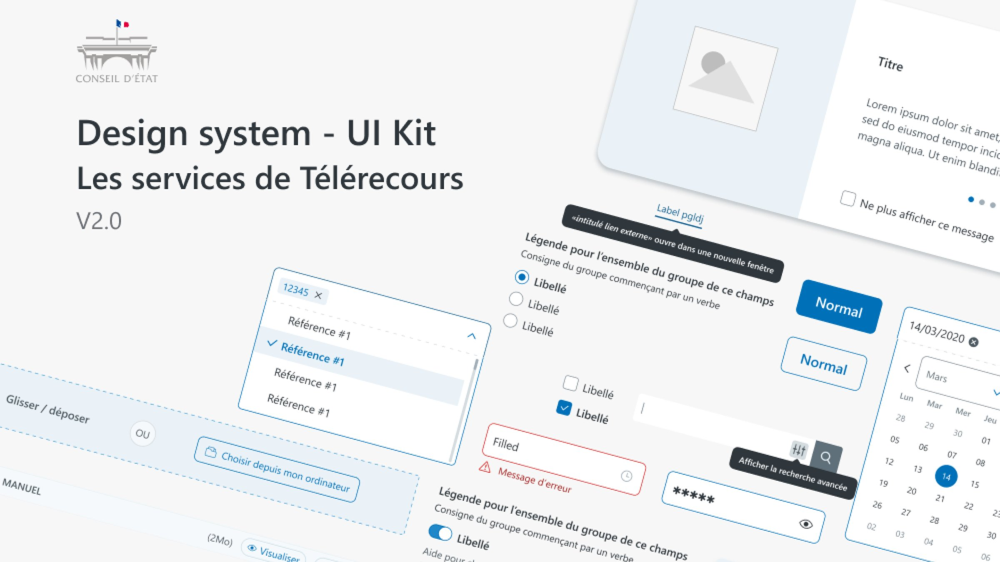
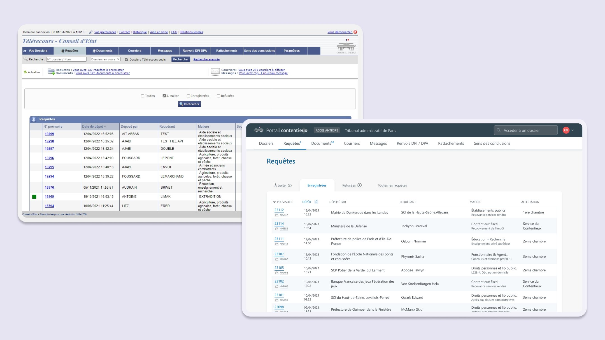
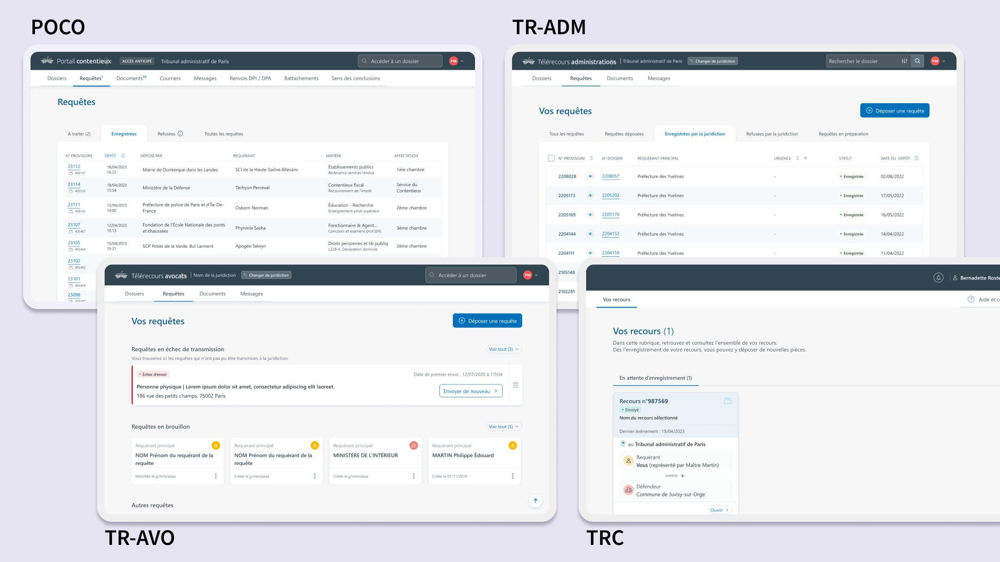
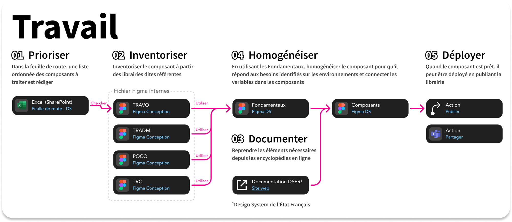
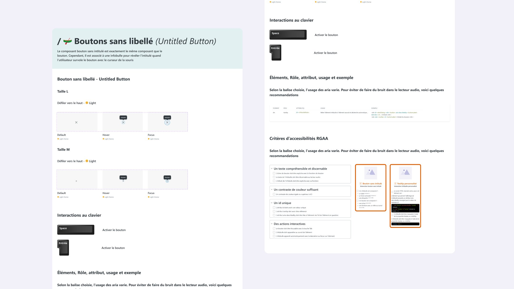
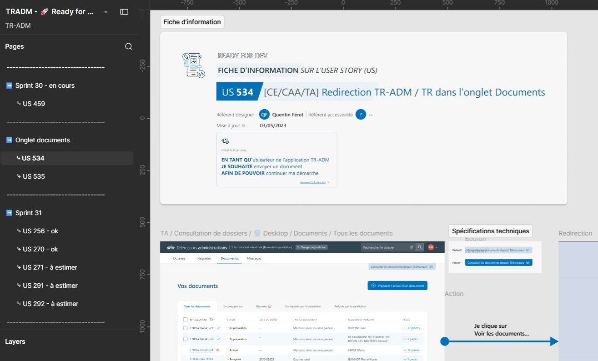

Synchroniser 5 designers autour d'un design system commun, et intégrer l'accessibilité dès la conception pour la refonte graphique de Télérecours.
Refonte graphique
Design system
Service public
Client
Conseil d'État
Rôle
Designer UX/UI
Période
Févr. 2022 – août 2023
Équipe
CGI et la DSI du Conseil d'État
Outils
Figma

En bref
Le problème, ma décision, l'effet.
Problème
Un fichier de livraison incomplet, et des règles HTML et d'accessibilité absentes du design system.
Décision
Un circuit de validation avant le développement, et une documentation des composants qui intègre le RGAA.
Effet
Une production plus réaliste, alignée avec les développeurs, et un process en 5 étapes partagé par 5 outils.
Contexte & enjeu
Un produit par designer, un seul système à partager.
L'outil Télérecours a fait l'objet d'une refonte graphique. À cette occasion, une recherche utilisateur a été lancée pour améliorer les fonctionnalités existantes. Chaque produit avait son designer, chargé d'en concevoir l'interface.
Mon rôle : accompagner chaque designer, synchroniser les évolutions entre les produits, les centraliser dans une librairie et les partager avec l'ensemble des designers.

Avant / après · Liste des requêtes
De l'ancien Télérecours au nouveau Portail contentieux : la même liste de requêtes, refondue graphiquement.
Périmètre — les 5 outils de Télérecours
Télérecours citoyens
Refonte · une application plus accessible et plus ergonomique
Télérecours avocats
Refonte · en adéquation avec les nouveaux usages
Télérecours administrations
Conception · un Télérecours à destination des administrations
Portail contentieux
Refonte et fusion · deux outils réunis en une seule application
Annuaire des magistrats
Conception · un annuaire à destination des magistrats

Une fonctionnalité, quatre architectures
La liste des requêtes varie selon les besoins des chefs de projet et des utilisateurs de chaque outil : POCO, TR-ADM, TR-AVO et TRC.
Constat — une base déjà solide
01 · ACQUIS
Une équipe déjà organisée
La structure des fichiers et l'organisation des dossiers sont bien pensées.
02 · À RATTRAPER
Des évolutions en retard dans la librairie
Quelques évolutions restent à intégrer dans la librairie Figma.
03 · À AMÉLIORER
Un design system solide, une documentation à enrichir
Le design system existant est de très bonne qualité ; seule sa documentation est à améliorer.
Problèmes identifiés
P1 · LIVRAISON
Un fichier de livraison à améliorer
Le fichier Ready to Dev ne donnait pas encore aux développeurs toutes les informations nécessaires pour implémenter les maquettes.
P2 · ACCESSIBILITÉ
Des règles fonctionnelles et d'accessibilité absentes
Les attributs et rôles HTML, ainsi que les recommandations du RGAA, n'étaient pas intégrés aux composants.
Enjeu principal
Une production la plus réaliste possible, alignée avec les développeurs.
Démarche
Valider avant de développer.
Faire valider chaque nouvelle fonctionnalité par le design et la technique, avant même le refinement.
Le circuit d'une nouvelle fonctionnalité — trois étapes ajoutées avant le développement
Concevoir
Le designer conçoit la fonctionnalité.
Design review
Ajouté
Cohérence avec le design system et règles d'accessibilité.
Tech review
Ajouté
Évaluation de la faisabilité.
Partage avant refinement
Ajouté
Échanges en amont avec les développeurs.
Refinement et développement
Une fonctionnalité déjà discutée et réaliste.
Sources des recommandations RGAA · Système de design de l'État (DSFR) · MDN Web Docs (Mozilla)
Un process en 5 étapes pour intégrer un composant au design system
Prioriser
Selon la feuille de route.
Inventorier
À partir des fichiers de conception de chaque outil (TR-AVO, TR-ADM, POCO, TRC).
Documenter
À partir du Système de design de l'État.
Homogénéiser
Avec les fondamentaux.
Déployer
Publier et partager la librairie.

Process · Design system en 5 étapes
De la feuille de route au déploiement de la librairie, en s'appuyant sur les fichiers de conception de chaque outil.
Objectifs
OBJECTIF 1
Alléger la livraison aux développeurs
Réduire l'effort nécessaire pour transmettre les documents aux développeurs (design handoff).
OBJECTIF 2
Intégrer l'accessibilité dès la conception
Concevoir en tenant compte de l'accessibilité dès les premières maquettes, et non après coup.
1
design system à gérer
21
composants atomes
26
composants molécules
Oui
design tokens · colorimétrie
Décisions clés
Trois décisions pour aligner design et développement.
Chaque décision répond à un problème précis et se traduit par une pratique en place à l'issue de la mission.
D1
Un circuit de validation avant le développement
Constat
Un fichier Ready to Dev qui ne donnait pas aux développeurs toutes les informations nécessaires.
Décision
Ajouter une design review et une tech review, et partager les fonctionnalités en amont du refinement pour échanger avec les développeurs.
Effet
3 étapes ajoutéesune fonctionnalité déjà discutée et réaliste avant le développement.
D2
Une documentation qui intègre l'accessibilité
Constat
Les attributs, rôles HTML et recommandations du RGAA n'étaient pas intégrés aux composants.
Décision
Documenter chaque composant : états, interactions au clavier, éléments, rôles et attributs HTML, critères RGAA à vérifier, en s'appuyant sur le DSFR et MDN.
Effet
RGAA intégréles règles HTML et les recommandations RGAA figurent dans la documentation des composants.
D3
Un process commun à tous les designers
Constat
Un produit, un designer : des évolutions en retard dans la librairie et une documentation à enrichir.
Décision
Un process de travail en 5 étapes, de la feuille de route au déploiement, pour intégrer chaque composant au design system.
Effet
5 designerssynchronisés autour d'un design system commun, sur les 5 outils.
Réalisations
La documentation et la livraison, concrètement.
Un composant documenté avec ses critères RGAA, et le fichier de livraison aux développeurs.

Documentation d'un composant · Bouton sans libellé Clavier, HTML, RGAA

Fichier Ready to Dev Fiche d'information et spécifications
Trois pratiques pour une production plus réaliste.
À l'issue de la mission, trois pratiques sont en place, alignées avec les développeurs.
01Un circuit de validation avant le développementDesign review, tech review et partage des fonctionnalités en amont du refinement.
02Une documentation qui intègre l'accessibilitéLes règles HTML (éléments, rôles, attributs) et les recommandations RGAA dans la documentation des composants.
03Un process commun aux designersUn process de travail en 5 étapes, partagé par les designers des 5 outils.
Ce que j'ai appris
01
Gérer un design system partagé entre 5 designers.
02
Intégrer l'accessibilité numérique (RGAA) dans la conception.